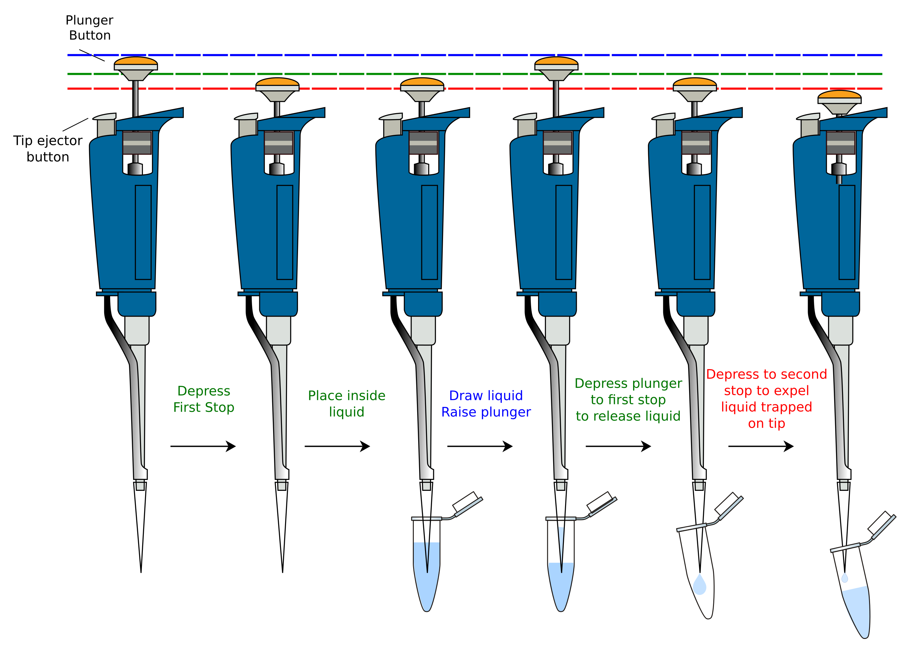

Pipetting¶
Recombinant DNA technology is technically easy to do once you have mastered a few basic manual procedures. The most essential of these is the transfer of specified volumes of liquid accurately and cleanly from one container to another. In molecular biology, we frequently work with microliter (µL) volumes, often using multi-step protocols where precision and care are essential.
Micropipette Basics¶
Micropipettes are precision tools used to measure and transfer small volumes of liquid, typically between 0.5 µL and 1000 µL. Each pipette is optimized for a specific volume range and should only be used within that range for accurate results.
Common pipette sizes:
- P10: 0.5–10 µL
- P20: 0.5/2–20 µL
- P200: 20–200 µL
- P1000: 100–1000 µL
Both the P10 and P20 can be used to deliver 0.5 µL, though accuracy at this volume depends more on careful technique than on the specific pipette. You’ll will always visually confirm how far the liquid rides up the tip to know things went right, and this is most important with the smaller volumes.
Each pipette uses tips that must be changed between uses to avoid contamination.
LTS vs. Universal Tips¶
In this lab, we use LTS (LiteTouch System) pipettes and tips. Unlike universal-fit pipettes, LTS tips require less force to attach and eject and help reduce repetitive strain. LTS pipettes have a cylindrical shaft with a defined stop, making tip seating more consistent. Do not attempt to use universal tips with LTS pipettes—they will not seal properly and will result in inaccurate volumes.
How to Pipette¶
- Set the volume using the adjustment dial. Ensure it is within the specified range.
- Attach a sterile tip securely by pressing the pipette into the tip box and gently twisting.
- Press the plunger to the first stop before inserting into the liquid.
- Immerse the tip just below the surface of the liquid (2–3 mm), then slowly release the plunger to draw up the sample.
- Transfer the liquid by touching the pipette tip to the side of the destination container and pressing the plunger to the second stop.
- Eject the tip into the waste bin using the ejector button.

Figure: Forward pipetting sequence using a micropipette.
Steps: (1) Press plunger to first stop. (2) Insert tip into liquid. (3) Slowly release plunger to draw up liquid. (4) Dispense by pressing to first stop. (5) Press to second stop to expel remaining liquid. Always eject tips between uses to prevent contamination.
Image credit: Jeremy Seto, bio-oer GitHub repository
{kind=link}
Best Practices¶
- Always hold the pipette vertically when drawing up liquid.
- Change tips between samples to avoid cross-contamination.
- Never turn the volume dial outside of the pipette’s range.
- Never lay a pipette sideways with liquid inside.
Preventing Contamination¶
Contamination is one of the most common issues in molecular biology labs.
Key guidelines:
- One tip = one sample. Never reuse a tip between samples.
- Avoid touching the tip to anything other than the intended liquid and container.
- Never pipette without a tip—this will contaminate the pipette barrel.
- Always prep your workspace before picking up a tip:
- Label tubes
- Open caps
- Arrange tubes in racks
- Uncap reagents if needed
Trying to do setup with a tip already on risks cross-contamination.
Hold large pipettes like the P1000 vertically when pipetting. If held at an angle, liquid can run up into the barrel and damage the internal mechanism. You may also see an apparent air gap in the tip, which is not a real issue—it's just gravity acting on a larger volume.
Reading the Display¶
The display on a pipette shows the set volume. On a P20, for example, "200" means 20.0 µL, while on a P1000, it would mean 200 µL. Make sure you understand what each digit represents based on the pipette type.
When Things Go Wrong¶
Signs you’ve pipetted incorrectly:
- Air bubbles in the tip
- Liquid stuck in the tip
- Inconsistent volumes across replicates
- Droplets left on the outside of the tip
If you see any of these, discard the tip and try again carefully.
What You'll Practice and Demonstrate¶
As part of pipetting training, you will perform the following steps and demonstrate them to your instructor:
- Transfer 1 mL of water from a conical tube to a 1.5 mL microcentrifuge tube using a P1000.
- Transfer 50 µL of pink solution from a microcentrifuge tube to a 0.2 mL PCR tube using a P200.
- Transfer 0.5 µL of viscous blue glycerol solution into the same 0.2 mL PCR tube using a P20.
- Close the 0.2 mL PCR tube once (repeated openings damage the seal and can cause leakage during thermocycling).
- Mix the solution by inverting and slamming the tube on the bench upside down.
- Perform a quick spin to collect liquid at the bottom of the tube.
Follow all pipetting best practices and contamination precautions during this demo.
Quiz: Pipetting Basics¶
Answer all questions correctly to pass. If you miss any, the quiz resets with a new randomized set.